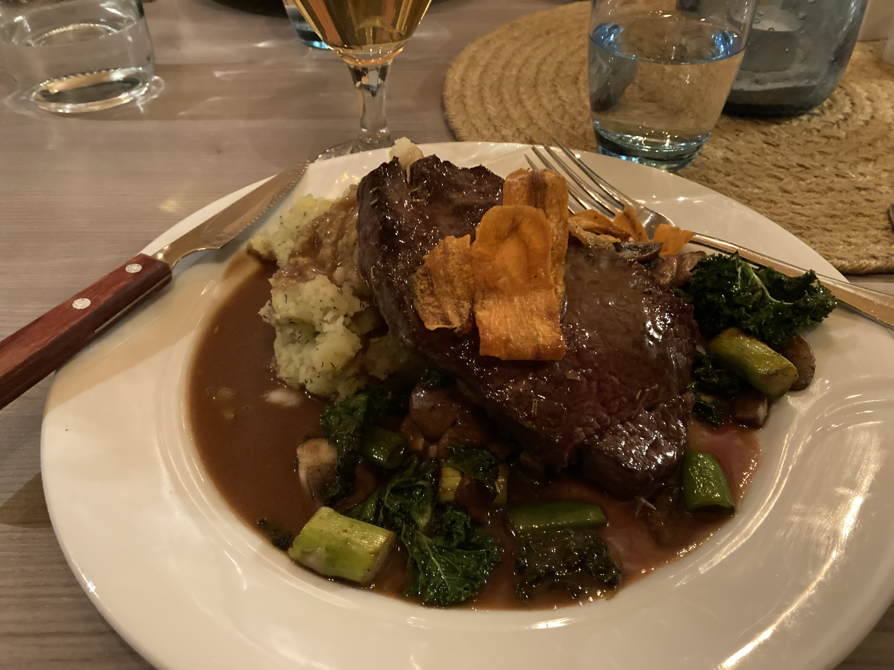

Dingle’s food scene offers fresh seafood, creamy chowder, artisanal cheese, local pubs, and vibrant markets showcasing authentic Irish flavors.
Dining in Dingle

Dingle is one of Ireland’s top foodie destinations, known for its vibrant mix of traditional and contemporary dining. The town is dotted with cozy pubs serving hearty Irish stews, freshly baked brown bread, and pints of Guinness. Visitors can enjoy relaxed meals while soaking in the warm, welcoming atmosphere that makes Dingle famous.
Seafood lovers will be in paradise here, with many restaurants serving fish caught just hours before it hits the plate. Dingle is especially known for its fresh crab claws, Atlantic lobster, and creamy seafood chowder. Waterfront spots offer incredible harbor views, making every meal feel like a special occasion.
Whether you’re grabbing a quick bite or sitting down for a fine dining experience, Dingle offers flavors to suit every appetite.